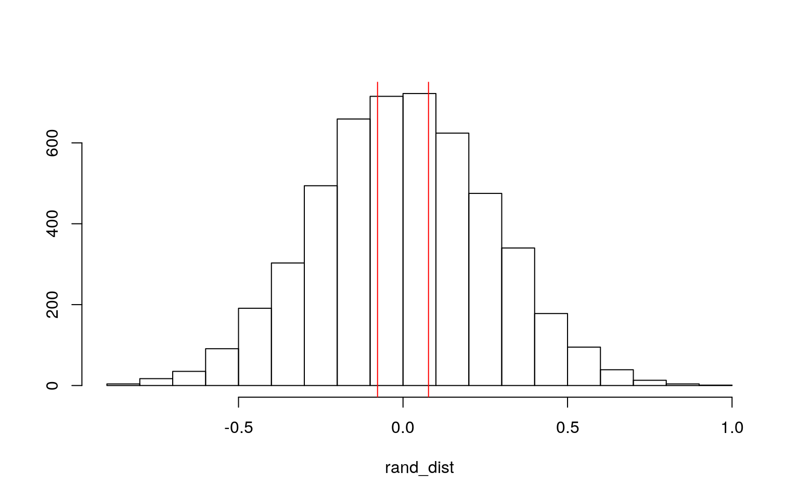
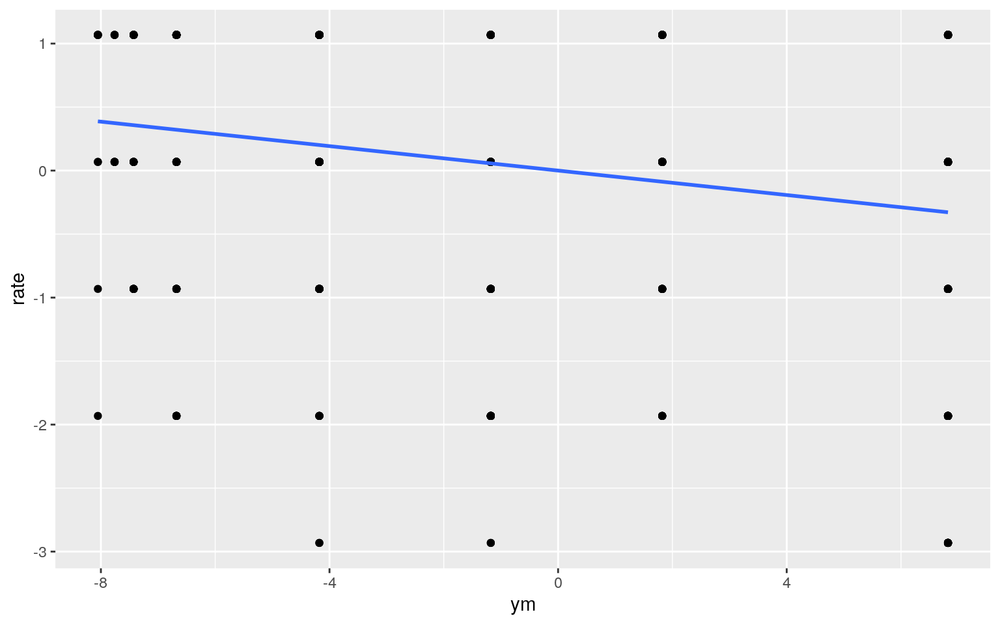
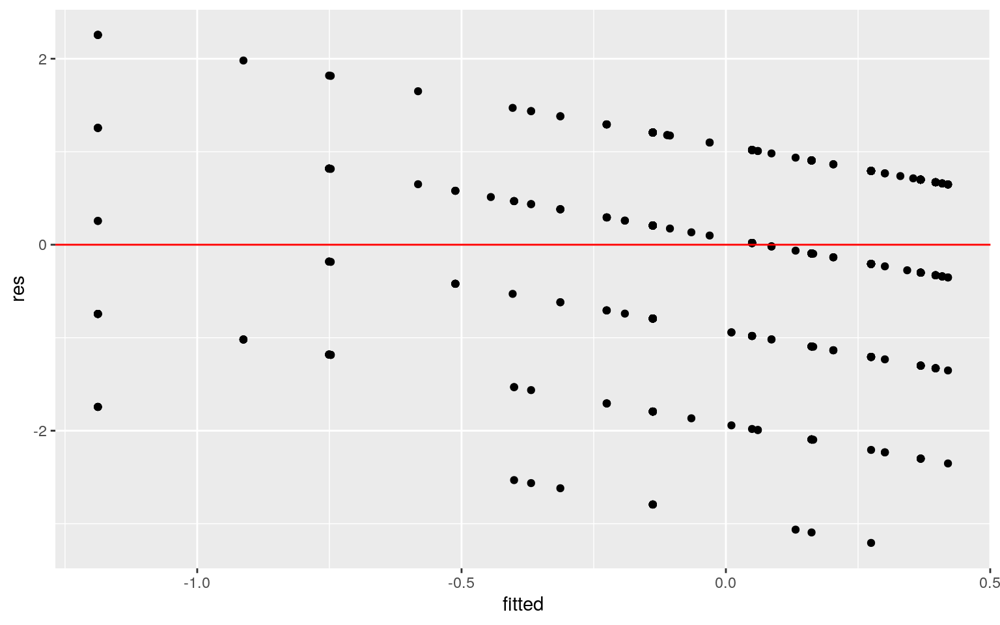
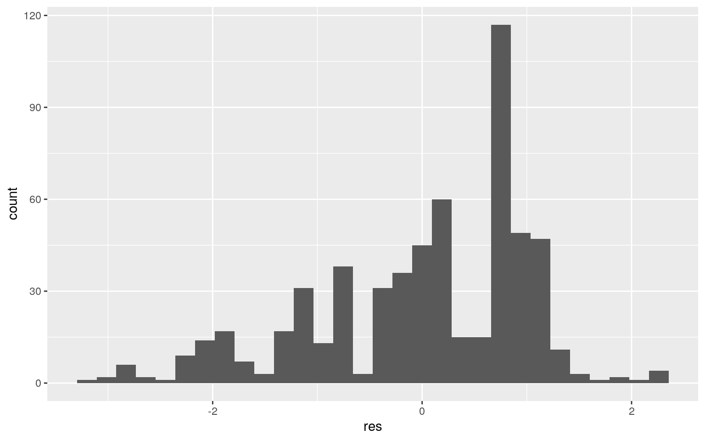
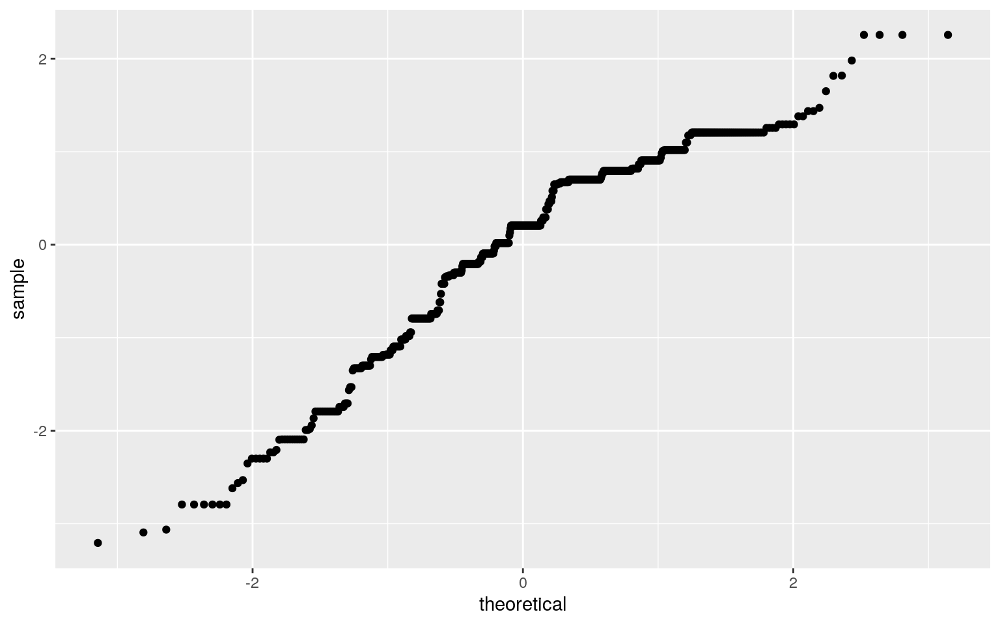
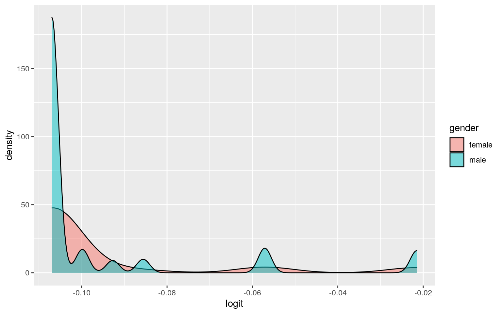
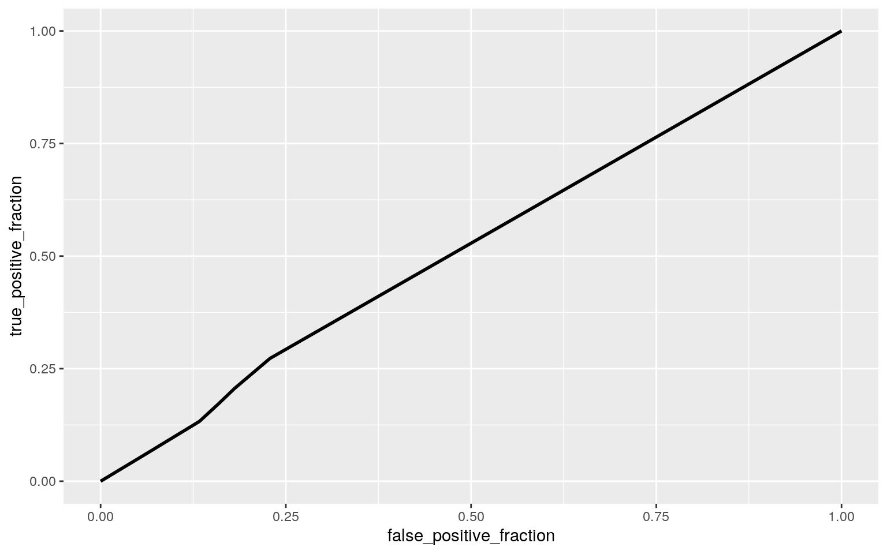

A knitted R Markdown document (preferably HTML) and the raw R Markdown file (as .Rmd) should both be submitted to Canvas by 11:59pm on the due date. These two documents will be graded jointly, so they must be consistent (i.e., don’t change the R Markdown file without also updating the knitted document). In the .Rmd file for Project 2, you can copy the first code-chunk into your project .Rmd file to get better formatting. Notice that you can adjust the opts_chunk$set(…) above to set certain parameters if necessary to make the knitting cleaner (you can globally set the size of all plots, etc). You can copy the set-up chunk in Project2.Rmd: I have gone ahead and set a few for you (such as disabling warnings and package-loading messges when knitting)!
Like before, I envision your written text forming something of a narrative structure around your code/output. All results presented must have corresponding code. Any answers/results/plots etc. given without the corresponding R code that generated the result will not be graded. Furthermore, all code contained in our project document should work properly. Please do not include any extraneous code or code which produces error messages. (Code which produces warnings is fine as long as you understand what the warnings mean.)
library(AER)
aff <- read.csv("Affairs.csv")Find one dataset with at least 5 variables (ideally more!) that you want to use to build models/test hypotheses. At least one should be categorical (with 2-5 groups, ideally; definitely fewer than 10) and at least two should be numeric (taking on more than 10 distinct values). Ideally, at least of your variables will be binary (if not, you will have to create one by discretizing a numeric or collapsing levels of a categorical). You will need a minimum of 40 observations (at least 10 observations for every explanatory variable you have, ideally 20+ observations/variable).
It is perfectly fine to use either dataset (or the merged dataset, or a subset of your variables) from Project 1. However, I might encourage you to diversify things a bit and choose a different dataset to work with (particularly if the variables did not reveal interesting associations in Project 1 that you want to follow up with). The only requirement/restriction is that you may not use data from any examples we have done in class or lab. It would be a good idea to pick more cohesive data this time around (i.e., variables that you actually thing might have a relationship you would want to test). Think more along the lines of your Biostats project.
Again, you can use data from anywhere you want (see bottom for resources)! If you want a quick way to see whether a built-in (R) dataset has binary and/or character (i.e., categorical) variables, check out this list: https://vincentarelbundock.github.io/Rdatasets/datasets.html.
head(aff)## X affairs gender age yearsmarried children religiousness
education occupation rating
## 1 4 0 male 37 10.00 no 3 18 7 4
## 2 5 0 female 27 4.00 no 4 14 6 4
## 3 11 0 female 32 15.00 yes 1 12 1 4
## 4 16 0 male 57 15.00 yes 5 18 6 5
## 5 23 0 male 22 0.75 no 2 17 6 3
## 6 29 0 female 32 1.50 no 2 17 5 5I chose the Affairs dataset. I was going through the available packages in R and this one caught my eye. It is a little outdated (from 1969). There are 601 observations with 9 variables. The main ones I want to focus on are affairs: which indicate the number of marital affairs the individual reported in the past year, their age, their rating on how happy they are in their marriage.
library(rstatix)
man <- manova(cbind(age,rating)~affairs, data=aff)
man## Call:
## manova(cbind(age, rating) ~ affairs, data = aff)
##
## Terms:
## affairs Residuals
## age 469.55 51299.11
## rating 57.05 673.15
## Deg. of Freedom 1 599
##
## Residual standard errors: 9.254256 1.060093
## Estimated effects may be unbalancedsummary(man) ## Df Pillai approx F num Df den Df Pr(>F)
## affairs 1 0.079761 25.916 2 598 1.608e-11 ***
## Residuals 599
## ---
## Signif. codes: 0 '***' 0.001 '**' 0.01 '*' 0.05 '.' 0.1
' ' 1summary.aov(man)## Response age :
## Df Sum Sq Mean Sq F value Pr(>F)
## affairs 1 470 469.55 5.4827 0.01953 *
## Residuals 599 51299 85.64
## ---
## Signif. codes: 0 '***' 0.001 '**' 0.01 '*' 0.05 '.' 0.1
' ' 1
##
## Response rating :
## Df Sum Sq Mean Sq F value Pr(>F)
## affairs 1 57.05 57.049 50.764 3.002e-12 ***
## Residuals 599 673.15 1.124
## ---
## Signif. codes: 0 '***' 0.001 '**' 0.01 '*' 0.05 '.' 0.1
' ' 1pairwise.t.test(aff$age, aff$affairs, p.adj="none")##
## Pairwise comparisons using t tests with pooled SD
##
## data: aff$age and aff$affairs
##
## 0 1 2 3 7
## 1 0.242 - - - -
## 2 0.282 0.111 - - -
## 3 0.873 0.391 0.493 - -
## 7 0.164 0.061 0.885 0.498 -
## 12 0.055 0.024 0.843 0.308 0.657
##
## P value adjustment method: nonepairwise.t.test(aff$rating, aff$affairs, p.adj="none")##
## Pairwise comparisons using t tests with pooled SD
##
## data: aff$rating and aff$affairs
##
## 0 1 2 3 7
## 1 0.51476 - - - -
## 2 0.05367 0.22381 - - -
## 3 0.00039 0.01232 0.28491 - -
## 7 0.00032 0.04306 0.71245 0.36370 -
## 12 1.7e-09 0.00011 0.05698 0.47870 0.04465
##
## P value adjustment method: nonegroup <- aff$affairs
DVs <- aff %>% select(age, rating)
sapply(split(DVs,group), mshapiro_test)## 0 1 2 3 7 12
## statistic 0.9331716 0.9124625 0.8670838 0.9593522
0.9225058 0.9390568
## p.value 2.498192e-13 0.00995227 0.01975336 0.5596847
0.007298631 0.0390473I ran 5 tests: 2 Anovas, 2 t-tests, and a Manova. The first performed was a Manova which yielded a Pillai value of 0.079761, an F of approximately 25.916 and a significant p value of 1.608e-11.Then, I ran two univariate Anova tests on age and rating which also yielded significant results. The age and rating yielded F values of 5.4827 and 50.764 and P values of 0.01953 and 3.002e-12, respectively. Finally, I conducted pairwise t-tests and as seen above there was a significant p-value in all except for 3.
library(vegan)
library(tidyverse)
aff %>% group_by(gender) %>% summarise(means = mean(affairs)) %>% summarise(mean_diff=diff(means))## # A tibble: 1 x 1
## mean_diff
## <dbl>
## 1 0.0775rand_dist <- vector()
for (i in 1:5000) {
new <- data.frame(affairs = sample(aff$affairs), gender = aff$gender)
rand_dist[i] <- mean(new[new$gender =="male", ]$aff) - mean(new[new$gender == "female", ]$aff)
}
hist(rand_dist,main="",ylab=""); abline(v = c(-.07745588, .07745588),col="red") 
mean(rand_dist> .07745588 | rand_dist < -.07745588 )## [1] 0.7666The mean difference of our randomization tests was.07745588. We failed to reject the null hypothesis because our p value was was too large (0.7564).
3. (40 pts) Build a linear regression model predicting one of your response variables from at least 2 other variables, including their interaction. Mean-center any numeric variables involved in the interaction.
ggplot() using geom_smooth(method=“lm”). If your interaction is numeric by numeric, refer to code in the slides to make the plot or check out the interactions package, which makes this easier. If you have 3 or more predictors, just chose two of them to plot for convenience. (10)coeftest(..., vcov=vcovHC(...)). Discuss significance of results, including any changes from before/after robust SEs if applicable. (10)aff$ym <- aff$yearsmarried - mean(aff$yearsmarried)
aff$rate <- aff$rating - mean(aff$rating)
fit1 <- lm(rate ~ affairs*ym, data=aff)
summary(fit1)##
## Call:
## lm(formula = rate ~ affairs * ym, data = aff)
##
## Residuals:
## Min 1Q Median 3Q Max
## -3.2064 -0.7439 0.2064 0.7936 2.2561
##
## Coefficients:
## Estimate Std. Error t value Pr(>|t|)
## (Intercept) 0.117853 0.046499 2.535 0.0115 *
## affairs -0.077510 0.014611 -5.305 1.59e-07 ***
## ym -0.037534 0.008290 -4.527 7.21e-06 ***
## affairs:ym -0.001460 0.002623 -0.557 0.5779
## ---
## Signif. codes: 0 '***' 0.001 '**' 0.01 '*' 0.05 '.' 0.1
' ' 1
##
## Residual standard error: 1.04 on 597 degrees of freedom
## Multiple R-squared: 0.1163, Adjusted R-squared: 0.1119
## F-statistic: 26.2 on 3 and 597 DF, p-value: 6.225e-16coef(fit1)## (Intercept) affairs ym affairs:ym
## 0.117853291 -0.077509837 -0.037533663 -0.001460325aff %>% ggplot(aes(ym, rate)) + geom_point() + geom_smooth(method = 'lm', se=F, fullrange=T)
cor(aff$rate, aff$ym)## [1] -0.2431188res <- fit1$residuals
fitted <- fit1$fitted.values
#Homoskedasticity
ggplot() + geom_point(aes(fitted, res)) + geom_hline(yintercept = 0, color= 'red')
ggplot() + geom_histogram(aes(res))
ggplot() + geom_qq(aes(sample = res))+geom_qq()
coeftest(fit1)##
## t test of coefficients:
##
## Estimate Std. Error t value Pr(>|t|)
## (Intercept) 0.1178533 0.0464988 2.5345 0.01151 *
## affairs -0.0775098 0.0146105 -5.3051 1.589e-07 ***
## ym -0.0375337 0.0082905 -4.5273 7.214e-06 ***
## affairs:ym -0.0014603 0.0026226 -0.5568 0.57785
## ---
## Signif. codes: 0 '***' 0.001 '**' 0.01 '*' 0.05 '.' 0.1
' ' 1coeftest(fit1, vcov=vcovHC(fit1))##
## t test of coefficients:
##
## Estimate Std. Error t value Pr(>|t|)
## (Intercept) 0.1178533 0.0456339 2.5826 0.01004 *
## affairs -0.0775098 0.0164978 -4.6982 3.261e-06 ***
## ym -0.0375337 0.0082064 -4.5737 5.829e-06 ***
## affairs:ym -0.0014603 0.0030719 -0.4754 0.63469
## ---
## Signif. codes: 0 '***' 0.001 '**' 0.01 '*' 0.05 '.' 0.1
' ' 1fit2 <- lm(yearsmarried ~ rating, data = aff)
SSR <- sum((fit2$fitted.values-mean(aff$rating)))
SST <- sum((aff$rating-mean(aff$rating))^2)
SSR/SST## [1] 3.494638The coefficient was negative which means that the more years that an individual is married the lower their reported mean rating of happiness is in their relationship, which is very saddening. The model doesn’t show any violation of homoskedacity as there seems to be an even distribution throughout and little to no clustering. There is good linearity in my model as it there are scattered trends of decrease throughout. Normality assumption was also met from the graphs. According to the coeftests there were significant for the number of affairs and years married model.
samp_distn<-replicate(5000, {
boot_dat<-boot_dat<-aff[sample(nrow(aff),replace=TRUE),]
fit<-lm(aff$rate ~ aff$affairs*aff$ym, data=boot_dat)
coef(fit)
})After running a bootstrapped version of the same regression model, the outputs did not change.
5. (30 pts) Fit a logistic regression model predicting a binary variable (if you don’t have one, make/get one) from at least two explanatory variables (interaction not necessary).
library(plotROC)
binary <- aff%>%mutate(y=ifelse(gender=="male",1,0))
head(binary)## X affairs gender age yearsmarried children religiousness
education occupation rating ym
## 1 4 0 male 37 10.00 no 3 18 7 4 1.822304
## 2 5 0 female 27 4.00 no 4 14 6 4 -4.177696
## 3 11 0 female 32 15.00 yes 1 12 1 4 6.822304
## 4 16 0 male 57 15.00 yes 5 18 6 5 6.822304
## 5 23 0 male 22 0.75 no 2 17 6 3 -7.427696
## 6 29 0 female 32 1.50 no 2 17 5 5 -6.677696
## rate y
## 1 0.06821963 1
## 2 0.06821963 0
## 3 0.06821963 0
## 4 1.06821963 1
## 5 -0.93178037 1
## 6 1.06821963 0fit2 <- glm(y~affairs, data = binary, family=binomial(link="logit"))
coeftest(fit2) %>% addmargins()## Estimate Std. Error z value Pr(>|z|) Sum
## (Intercept) -0.106961597 0.08930996 -1.1976446 0.2310554
-0.9842408
## affairs 0.007122698 0.02475995 0.2876701 0.7735993
1.0931520
## Sum -0.099838899 0.11406992 -0.9099745 1.0046547
0.1089112exp(coef(fit2))## (Intercept) affairs
## 0.8985602 1.0071481logis <- function(x){exp(x)/(1+exp(x))}
table(truth=binary$affairs>0, prediction=binary$gender) %>% addmargins()## prediction
## truth female male Sum
## FALSE 243 208 451
## TRUE 72 78 150
## Sum 315 286 601acc <- (72+78)/601
acc## [1] 0.249584TPR <- (78/286)
TPR## [1] 0.2727273TNR <- 72/150
TNR## [1] 0.48PPV <- 78/150
PPV## [1] 0.52aff$logit<-predict(fit2)
aff$numAff<-as.factor(aff$affairs)
ggplot(aff, aes(logit, fill=gender)) + geom_density(alpha=.5)
library(plotROC)
ROCplot <- ggplot(binary) +geom_roc(aes(d=y, m=aff$affair), n.cuts = 0)
ROCplot
calc_auc(ROCplot)## PANEL group AUC
## 1 1 -1 0.5192086The model yielded a poor accuracy of .250, sensitivity of .273, specificity of .48, and auc value of 0.519.
class_diag<-function(probs,truth){
tab<-table(factor(probs>.5,levels=c("FALSE","TRUE")),truth)
acc=sum(diag(tab))/sum(tab)
sens=tab[2,2]/colSums(tab)[2]
spec=tab[1,1]/colSums(tab)[1]
ppv=tab[2,2]/rowSums(tab)[2]
if(is.numeric(truth)==FALSE & is.logical(truth)==FALSE) truth<-as.numeric(truth)-1
ord<-order(probs, decreasing=TRUE)
probs <- probs[ord]; truth <- truth[ord]
TPR=cumsum(truth)/max(1,sum(truth))
FPR=cumsum(!truth)/max(1,sum(!truth))
dup<-c(probs[-1]>=probs[-length(probs)], FALSE)
TPR<-c(0,TPR[!dup],1); FPR<-c(0,FPR[!dup],1)
n <- length(TPR)
auc<- sum( ((TPR[-1]+TPR[-n])/2) * (FPR[-1]-FPR[-n]) )
data.frame(acc,sens,spec,ppv,auc)
}- Fit model, compute in-sample classification diagnostics (Accuracy, Sensitivity, Specificity, Precision, AUC), and interpret (5)
- Perform 10-fold (or repeated random sub-sampling) CV with the same model and report average out-of-sample classification diagnostics (Accuracy, Sensitivity, Specificity, Precision, and AUC); interpret AUC and compare with the in-sample metrics (10)
- Perform LASSO on the same model/variables. Choose lambda to give the simplest model whose accuracy is near that of the best (i.e., `lambda.1se`). Discuss which variables are retained. (5)
- Perform 10-fold CV using only the variables lasso selected: compare model's out-of-sample AUC to that of your logistic regressions above (5)You can choose ANY datasets you want that meet the above criteria for variables and observations. You can make it as serious as you want, or not, but keep in mind that you will be incorporating this project into a portfolio webpage for your final in this course, so choose something that really reflects who you are, or something that you feel will advance you in the direction you hope to move career-wise, or something that you think is really neat, or whatever. On the flip side, regardless of what you pick, you will be performing all the same tasks, so it doesn’t end up being that big of a deal.
If you are totally clueless and have no direction at all, log into the server and type
data(package = .packages(all.available = TRUE))This will print out a list of ALL datasets in ALL packages installed on the server (a ton)! Scroll until your eyes bleed! Actually, do not scroll that much… To start with something more manageable, just run the command on your own computer, or just run data() to bring up the datasets in your current environment. To read more about a dataset, do ?packagename::datasetname.
If it is easier for you, and in case you don’t have many packages installed, a list of R datasets from a few common packages (also downloadable in CSV format) is given at the following website: https://vincentarelbundock.github.io/Rdatasets/datasets.html.
A good package to download for fun/relevant data is fivethiryeight.
Run install.packages("fivethirtyeight"), load the packages with library(fivethirtyeight), run data(), and then scroll down to view the datasets. Here is an online list of all 127 datasets (with links to the 538 articles). Lots of sports, politics, current events, etc.
If you have already started to specialize (e.g., ecology, epidemiology) you might look at discipline-specific R packages (vegan, epi, respectively). We will be using some tools from these packages later in the course, but they come with lots of data too, which you can explore according to the directions above
However, you emphatically DO NOT have to use datasets available via R packages! In fact, I would much prefer it if you found the data from completely separate sources and brought them together (a much more realistic experience in the real world)! You can even reuse data from your SDS328M project, provided it shares a variable in common with other data which allows you to merge the two together (e.g., if you still had the timestamp, you could look up the weather that day: https://www.wunderground.com/history/). If you work in a research lab or have access to old data, you could potentially merge it with new data from your lab!
Here is a curated list of interesting datasets (read-only spreadsheet format): https://docs.google.com/spreadsheets/d/1wZhPLMCHKJvwOkP4juclhjFgqIY8fQFMemwKL2c64vk/edit
Here is another great compilation of datasets: https://github.com/rfordatascience/tidytuesday
Here is the UCI Machine Learning Repository: https://archive.ics.uci.edu/ml/index.php
Here is another good general place to look: https://www.kaggle.com/datasets
To help narrow your search down or to see interesting variable ideas, check out https://www.tylervigen.com/spurious-correlations. This is the spurious correlations website, and it is fun, but if you look at the bottom of each plot you will see sources for the data. This is a good place to find very general data (or at least get a sense of where you can scrape data together from)!
If you are interested in medical data, check out www.countyhealthrankings.org
If you are interested in scraping UT data, they make loads of data public (e.g., beyond just professor CVs and syllabi). Check out all the data that is available in the statistical handbooks: https://reports.utexas.edu/statistical-handbook
Data.gov 186,000+ datasets!
Social Explorer is a nice interface to Census and American Community Survey data (more user-friendly than the government sites). May need to sign up for a free trial.
U.S. Bureau of Labor Statistics
Gapminder, data about the world.
…